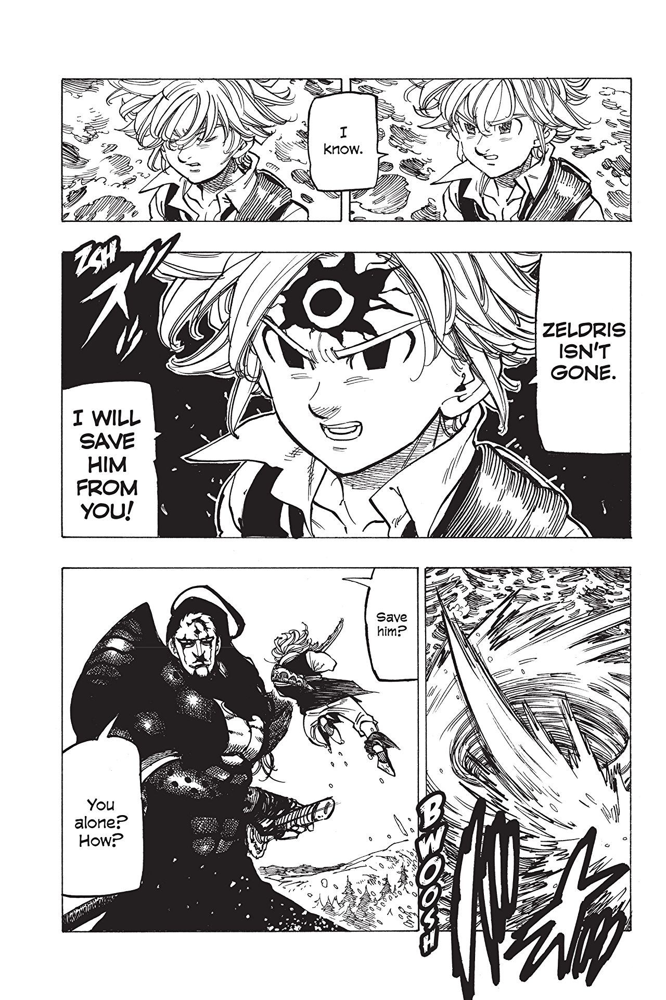
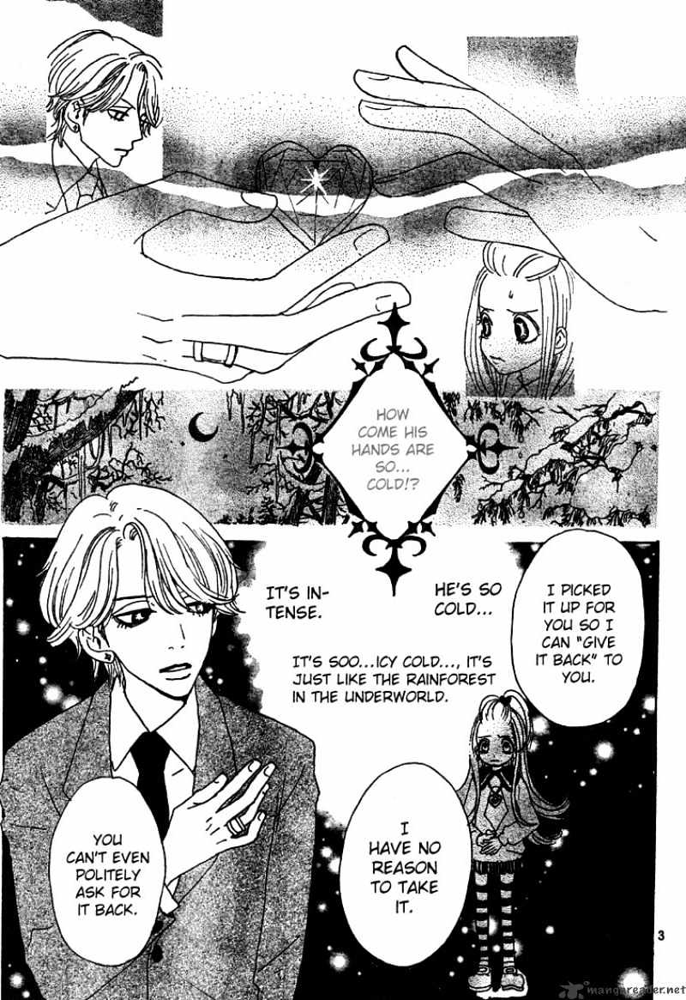
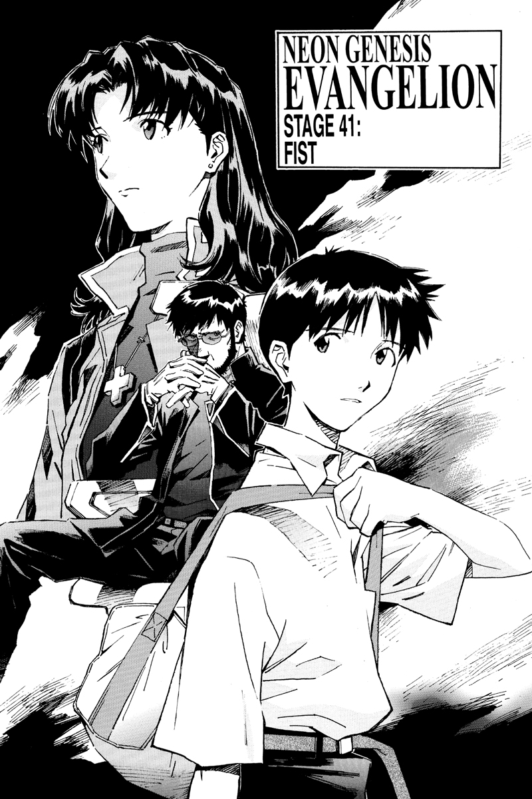
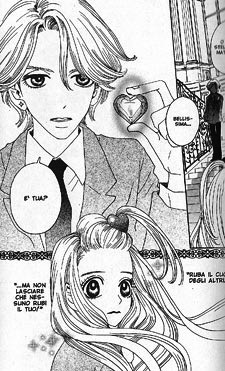
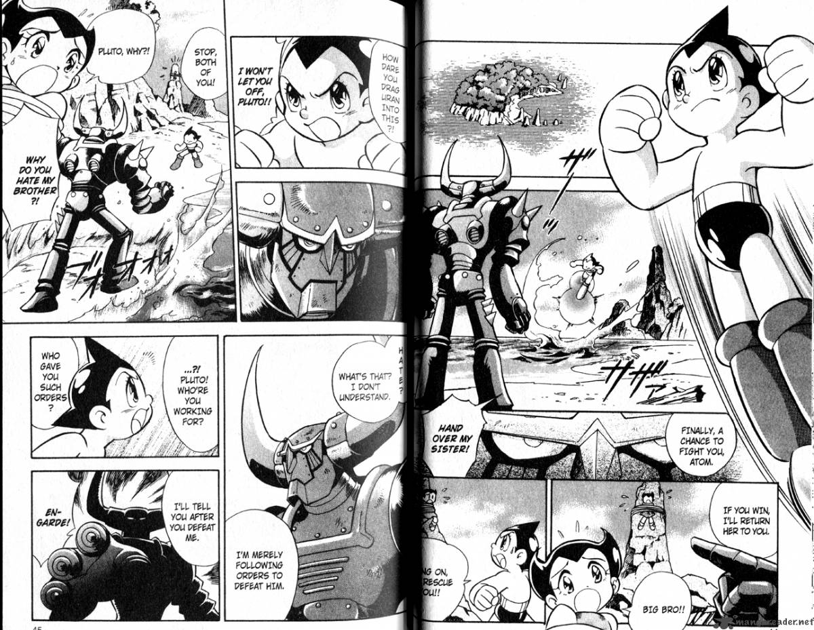

Manga (jap. 漫画 (kanji) ili まんが (kana)) je riječ koja se općenito koristi za japanske stripove. U doslovnom prijevodu bi značila "pokretna slika". Termin je u 18. stoljeću ustoličio slikar Katsushika Hokusai (1760.-1849.), koristeći dva kineska ideograma (man = slika, ga = pokret) kako bi definirao svoje crno-bijele crteže. Termin se modernizirao 1860-ih, i tematski je izrastao eksplodirajući u kulturnoj sceni nakon II. svjetskog rata.
    Crtači manga su dobili inspiraciju iz američkih stripova, filmova i crtića (pogotovo Diznijevih). Bez obzira na izvor inspiracije, eksplozija umjetničke kreativnosti se dogodila u periodu poslije rata uključujući umjetnike Osamu Tezuka (Astro Boy) i Machiko Hasegawa (Sazae-san). Astro Boy je brzo postao popularan u Japanu i širom svijeta, a anime verzija Sazae-san je pogledalo više ljudi nego ijedan drugi anime u 2011.
Primjer crtanja:
Uvod u poznatih mangi: www.liveabout.com